スマホの基本操作
スマートフォンの基本的な使い方を、わかりやすく紹介します。
学習メニュー
文字サイズの変更
iPhoneの文字が小さくて読みにくいときは、 設定から文字を大きくできます。
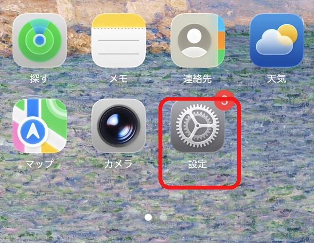
手順 1 設定を開く
ホーム画面にある「設定」アプリをタップします。
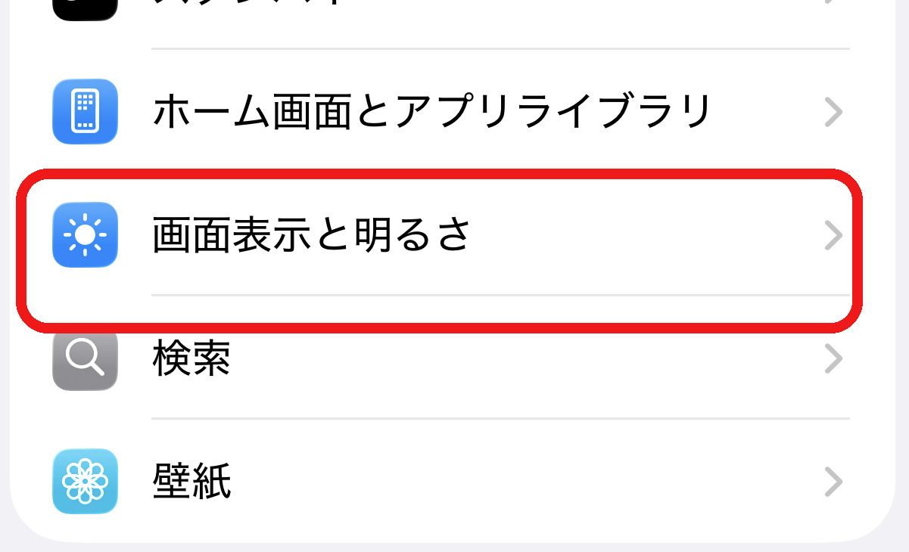
手順 2 画面表示と明るさ
設定画面にある「画面表示と明るさ」をタップします。
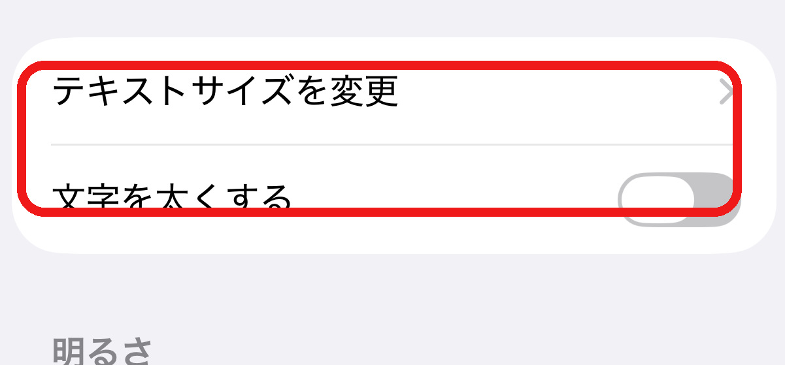
手順 3 テキストサイズを選ぶ
「テキストサイズを変更」をタップします。
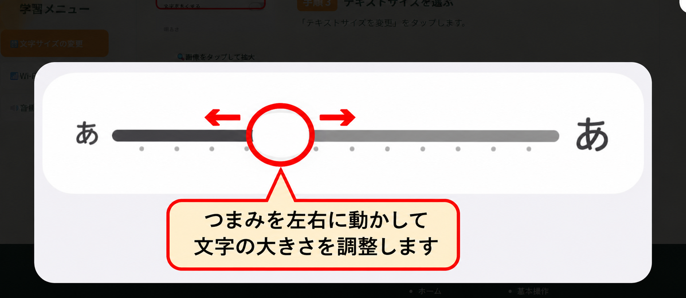
手順 4 文字を大きくする
画面の下にあるスライダーを右に動かすと、文字が大きくなります。
Wi-Fiの接続
iPhoneをWi-Fiに接続する方法を紹介します。
手順 1 設定を開く
ホーム画面にある「設定」アプリをタップします。
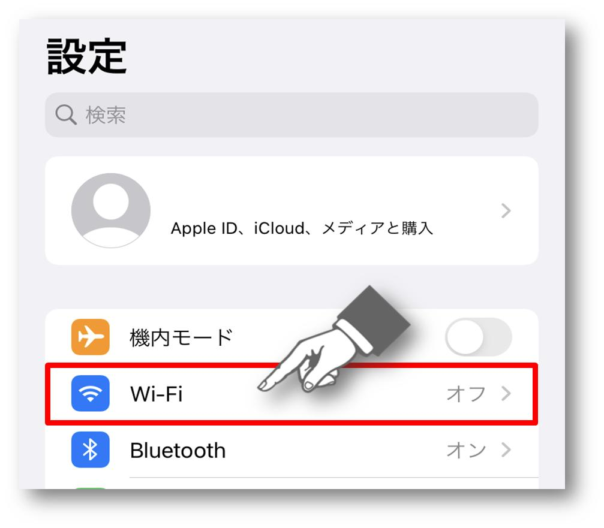
手順 2 Wi-Fiを選ぶ
設定画面にある「Wi-Fi」をタップします。
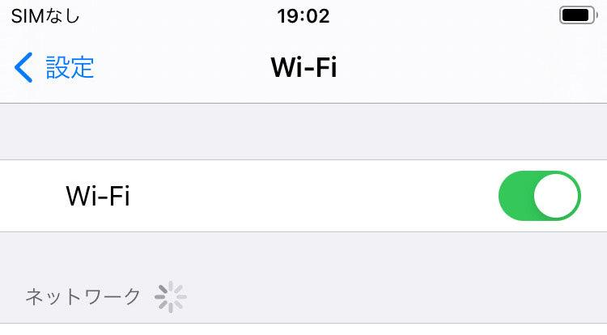
手順 3 Wi-Fiをオンにする
「Wi-Fi」のスイッチをタップして、 オン（緑色）にします。
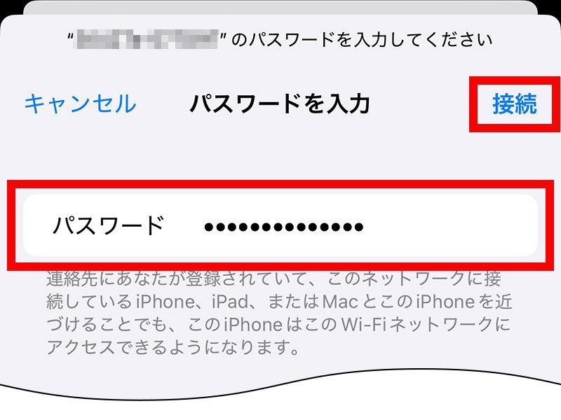
手順 4 パスワードを入力する
接続したいネットワークを選び、 パスワードを入力して「接続」をタップします。
音量の調整
スマートフォンの音量を調整する方法を紹介します。
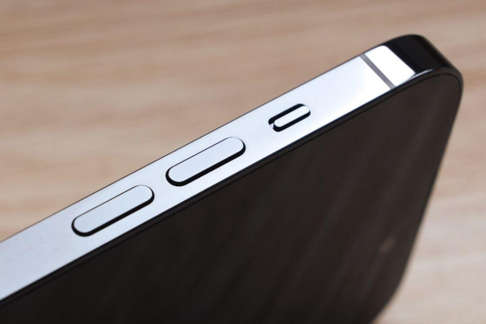
手順 1 音量ボタンを確認する
iPhoneの側面にある音量ボタンを確認します。
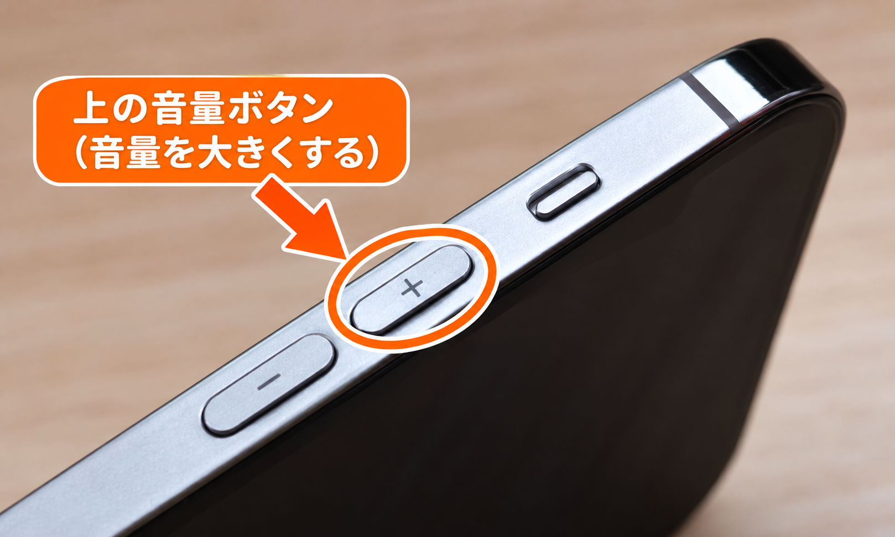
手順 2 音量を大きくする
iPhoneの側面にある上の音量ボタンを押すと、 音量が大きくなります。
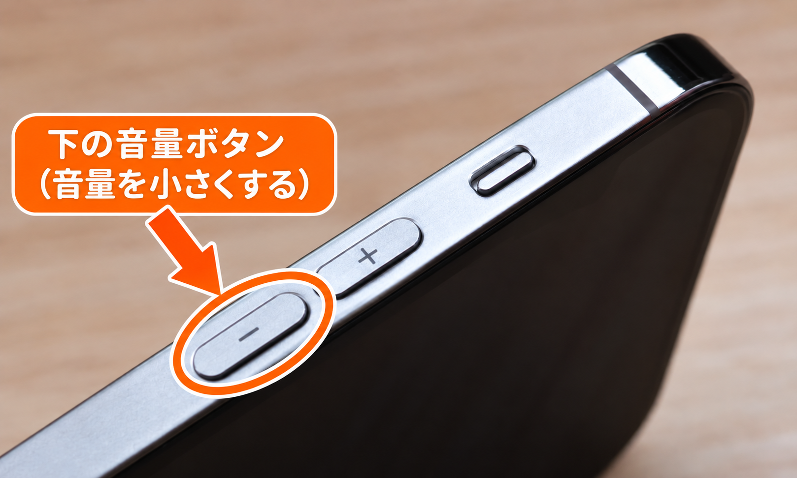
手順 3 音量を小さくする
iPhoneの側面にある下の音量ボタンを押すと、 音量が小さくなります。
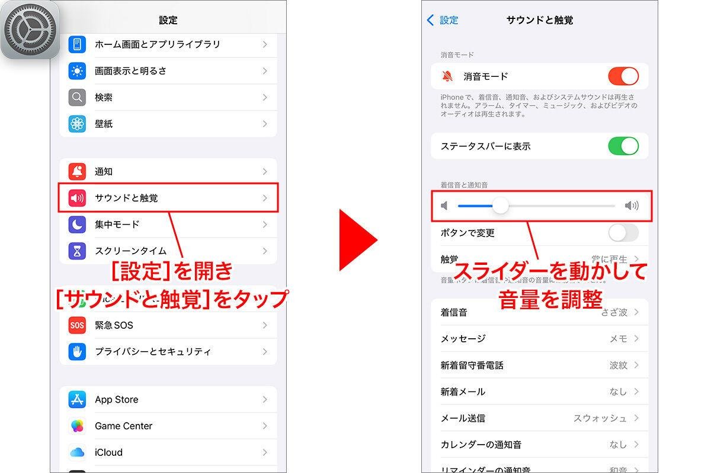
手順 4 設定から音量を調整する
「設定」から「サウンドと触覚」を開き、「着信音と通知音」のスライダーを動かします。